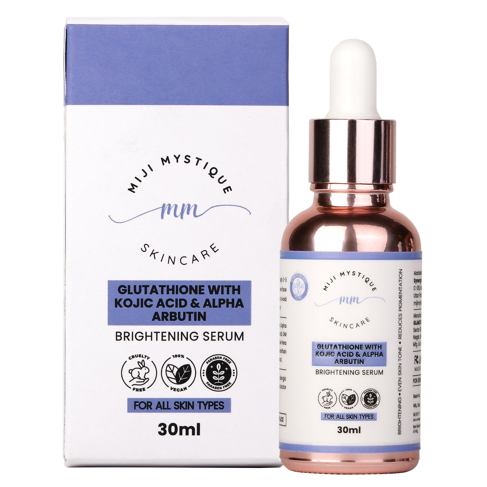

MIJI MYSTIQUE: REVEAL YOUR SKIN'S TRUE RADIANCE
Brighten. Even. Illuminate. Powered by Glutathione, Kojic Acid, and Alpha Arbutin—this serum visibly brightens dark spots, evens out skin tone, and promotes a healthy glow.
Achieve a brighter, more balanced complexion with this dermatologist-formulated serum. Designed to reduce hyperpigmentation, dark spots, and dullness, it combines powerful antioxidants for radiant skin.
Glutathione is a master antioxidant that works to reduce melanin, while Kojic Acid and Alpha Arbutin target visible discoloration. Together, they leave skin visibly clearer and more luminous.
Popular search terms: skin brightening serum, glutathione for skin, kojic acid face serum, pigmentation removal, dark spot corrector.
Use daily in the morning or evening after cleansing. Apply 2–3 drops to face and neck. Follow with moisturizer and SPF (if used during daytime).
This formula is gentle on most skin types and suitable for regular use.
Illuminate your skin safely—reveal your best complexion with our Glutathione Brightening Serum.